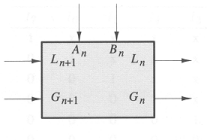
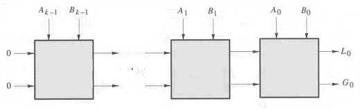
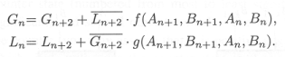
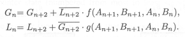

Problem 1.
A certain function F has the following truth table:
A B C | F
========|===
0 0 0 | 1
0 0 1 | 0
0 1 0 | 0
0 1 1 | 1
1 0 0 | 1
1 0 1 | 1
1 1 0 | 0
1 1 1 | 1
-
 Write a sum-of-products expression for F.
Write a sum-of-products expression for F.
-
Write a minimal sum-of-products expression for F.
Show a combinational circuit that implements F using only
INV and NAND gates.
-
Implement F using one 4-input MUX and inverter.
-
Write a minimal sum-of-products expression for NOT(F).
Problem 4.
The following diagram shows the pulldown circuitry for a static CMOS
logic gate that implements the function F(A,B,C,D):

-
Draw a circuit diagram for the pullup circuitry that would complete
the static CMOS implementation of F(A,B,C,D).
-
Assuming the correct pullup circuitry is added to the diagram above,
give a minimal sum-of-products expression for F(A,B,C,D).
-
Which of the following changes will decrease the propagation time of
the above circuit?
(A) decreasing the power supply voltage
(B) increasing the power supply voltage
(C) increasing the operating temperature
(D) redefining VOL to provide increased noise margins
Problem 9.
Digital Widgets Co. has introduced a new logic IC consisting of two
comparator cells in a 14-pin package. A comparator cell, as drawn
below, has four inputs and two outputs.

The inputs are labeled An, Bn, Gn+1, and Ln+1, and the outputs are
labeled Gn and Ln. The G and L signals have the meanings "A greater
than B" and "A less than B," respectively. If both G and L are false,
the meaning is A = B. G and L are never both true. Two k-bit numbers
A and B may be compared using a circuit such as the following:

The most significant bits are supplied as Ak-1 and
Bk-1, and the least significant bits are A0 and B0.
The output of a comparison is taken from the G and L outputs of the
lowest-order cell (G0 and L0). Gn+1 and Ln+1 of the highest-order
cell are connected to logical 0 to indicate that the numbers are
assumed to be equal until some difference is found between a pair of
bits Ai and Bi.
If the Gn+1 and Ln+1 inputs indicate that higher-order bits have
established A > B or A < B, then cell n must propagate that
result to Gn and Ln. However, if Gn+1 and Ln+1 indicate that the
higher-order bits are equal, then cell n must compare its bit of A and
B to determine if A > B, A < B, or A = B and must signal that
result appropriately at Gn and Ln.
-
Draw a logic diagram for an implementation of the Digital Widgets
comparator cell.
-
Since there is delay associated with the propagation of the G and L
signals through each cell, we could make the comparator work faster
by redesigning the basic cell to compare two bits at a time, halving the number
of stages through which the G and L signals will need to propagate.
 Work out expressions for Gn and Ln as functions of Gn+2, Ln+2,
An+1, Bn+1, An, and Bn. Express your answers in the form

Work out expressions for Gn and Ln as functions of Gn+2, Ln+2,
An+1, Bn+1, An, and Bn. Express your answers in the form

-
Given a reasonable implementation of the equations for Gn and Ln
derived in part B, how does the delay from a change in Gn+2
and Ln+2 to the appearance of correct outputs at Gn
and Ln compare with the corresponding delay for a circuit composed
of a cascade of two of the cells developed in part A?
Assume that all A and B inputs remain unchanged throughout.
Note: The reason for our interest in the propagation delay of the G and
L signals, specifically, is that in a chain of N comparators, every
extra gate delay in the G--L path will penalize total performance by N
gate delays. The time it takes for a change in an A or B input to be reflected
in the corresponding G or L output is also important, but improvements here
can at best result in decreasing total delay by some constant amount.